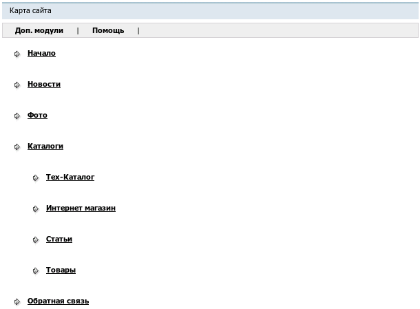

Название
Карта сайта — Отображение всей структуры сайта
О модуле
|
| Тип | Пользовательский |
| Можно создать копий | Сколько угодно |
| Присутствует по умолчанию | Нет |
| Можно удалять | Да |

Модуль отображает структуру сайта в виде дерева. Предназначен для облегчения навигации посетителям. Настроек не имеет.